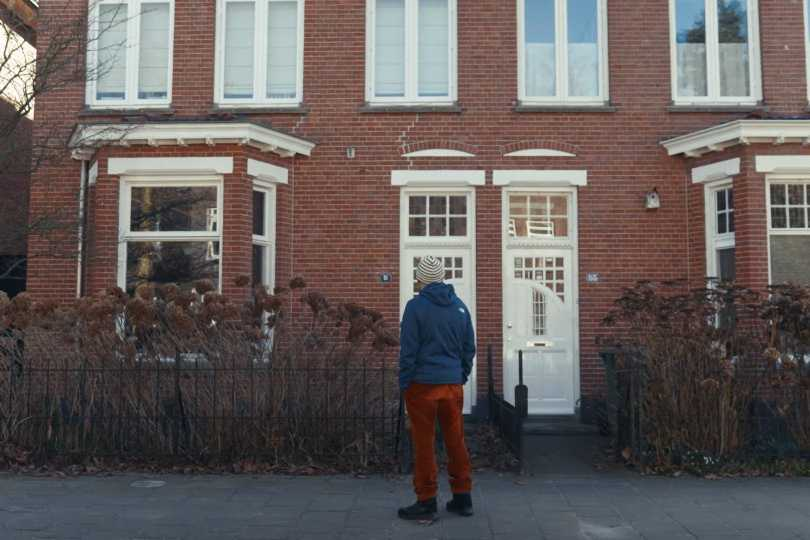
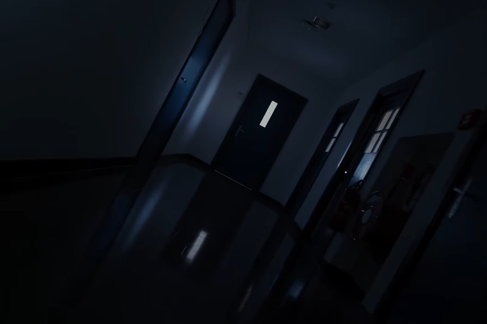
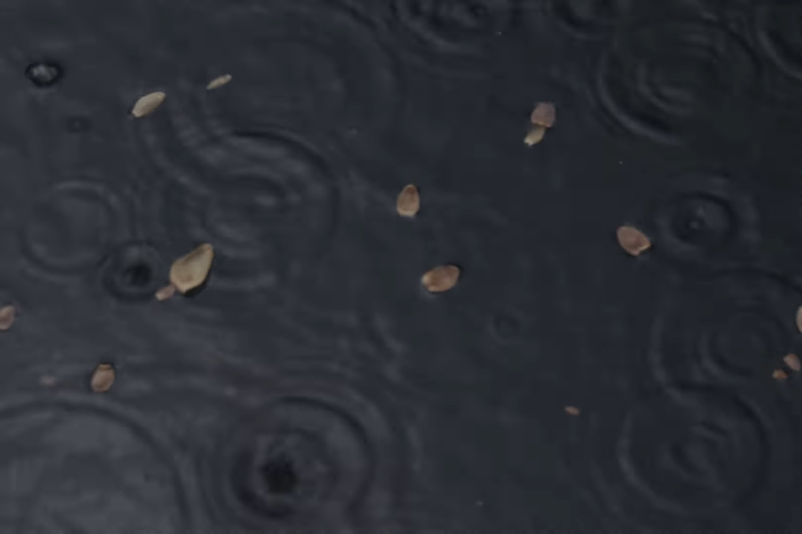

Licht, Zwart, Grijs
Documentaire
‘Licht, Zwart, Grijs’ is een korte documentaire die onderzoekt hoe mensen zich oorlog kunnen voorstellen wanneer ze die zelf nooit hebben meegemaakt. Gemaakt in opdracht en in samenwerking met Stichting Levend Verleden Oost Nederland.


